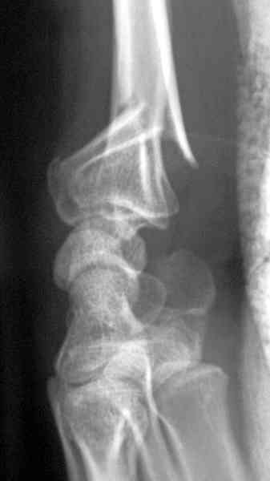

Bienvenue Sur Medical Education
Fractures : extrémité inférieure radius
Spécialité : traumatologie /
Points importants
-
Ce sont des fractures extrêmement fréquentes qui se voient essentiellement chez les sujets âgés
-
Les adultes jeunes ne sont pas épargnés tout particulièrement au cours d'accidents sportifs (football, ski, vélo...), d'accidents du travail ou d'accidents de la voie publique
Présentation clinique / CIMU
SIGNES FONCTIONNELS
-
Douleur à la mobilisation du poignet
-
Impotence fonctionnelle variable (peut donc être modérée, pouvant faire ignorer le diagnostic)
CONTEXTE
Présentation clinique / CIMU
SIGNES FONCTIONNELS
- Douleur à la mobilisation du poignet
- Impotence fonctionnelle variable (peut donc être modérée, pouvant faire ignorer le diagnostic)
CONTEXTE
Circonstances de survenue
- Habituellement, chute sur le talon de la main, le poignet étant en extension ; il s'agit d'un mécanisme en compression-extension où la compression peut prédominer sur l'extension et vice-versa
- Dans d'autres cas, chute sur la face dorsale du poignet, celui-ci étant en flexion ; il s'agit d'un mécanisme en compression-flexion
EXAMEN CLINIQUE
Apprécie
- La déformation en «dos de fourchette » pour les fractures de Pouteau-Colles
- La saillie de la styloïde cubitale
- La sub-luxation vers l'avant de la main et du poignet dans les fractures marginales antérieures et de Goyrand-Smith
- La mobilité et la sensibilité des doigts
- La vascularisation de la main et des doigts (pouls radial, cubital, pouls capillaire)
- L'ouverture cutanée éventuelle
- Verrouillage du poignet impossible
_918
- - -
Examen clinique de la main
Douleur exquise à la palpation de la tête radiale, surtout quand on y associe des mouvements de prono-supination
Radiologie
On distingue 3 grandes variétés de fractures
A déplacement postérieur (53 %)
_500
Photo
Fracture de l'extrémité inférieure du radius type Pouteau-Colles
_501
Photo
Fracture de l'extrémité inférieure du radius type Pouteau-Colles
A déplacement antérieur (2,5 %)
_502
Photo
Fracture de Goyrand-Smith ou Pouteau-Colles inversé
Fractures où un ou plusieurs traits atteignent l'articulation radio-carpienne. Plusieurs types
Fractures articulaires simples
Fractures sus-articulaires à refend articulaire (25 %)
_503
Photo
Fracture sus et intra-articulaire de l'extrémité inférieure du radius

_504
Photo
Fracture sus et intra-articulaire de l'extrémité inférieure du radius
Fractures comminutives (5 %)
_506
Photo
Fracture-luxation marginale antérieure du radius
_507
Photo
Fracture-luxation marginale antérieure du radius
Traitement orthopédique
Traitement chirurgical
_508
Photo
Embrochage selon Kapandji d'une fracture de l'extrémité inférieure du radius
_509
Photo
Embrochage selon Kapandji d'une fracture de l'extrémité inférieure du radius
Signes paracliniques
Diagnostic étiologique
FRACTURES SUS-ARTICULAIRES
FRACTURES ARTICULAIRES
 _505
Photo
Fracture comminutive de l'extrémité inférieure du radius
_505
Photo
Fracture comminutive de l'extrémité inférieure du radius
FRACTURE-LUXATION MARGINALE ANTERIEURE
LESIONS ASSOCIEES
Traitement
BASES ANATOMIQUES DE LA REDUCTION
METHODES
- _511 Photo Ostéosynthèse par fixateur externe en distraction
INDICATIONS
- Les fractures stables ou non déplacées : le traitement orthopédique donne habituellement des résultats satisfaisants et peut être géré par des médecins urgentistes
- Les fractures instables doivent être confiées au spécialiste pour une prise en charge chirurgicale
Surveillance
-
Lorsque la réduction est parfaite, le résultat est habituellement satisfaisant bien qu'il existe très souvent une discrète limitation de la mobilité dans les amplitudes extrêmes (flexion, extension, prono-supination)
-
Malheureusement, la rançon habituelle de la fracture de Pouteau-Colles (et autres) est le cal vicieux, avec saillie de la tête cubitale et main botte radiale ; si cela peut être acceptable chez un vieillard de plus de 80 ans, tout doit être fait pour l'éviter chez un adulte jeune ; une ostéotomie est souvent nécessaire pour corriger ce cal vicieux
-
L'algodystrophie est une complication relativement fréquente qui doit être prévenue par une mobilisation précoce. Elle peut entraîner des séquelles (raideurs des doigts+++)
-
Le syndrome du canal carpien peut parfois compliquer une fracture de l'extrémité inférieure du radius. Un EMG peut être indiqué quelques mois après une fracture pour confirmer ce diagnostic
Devenir / orientation
CRITERES D'ADMISSION
-
Fractures instables
CRITERES DE SORTIE
-
Les fractures stables ou non déplacées
ORDONNANCE DE SORTIE
-
Antalgiques
-
± AINS
RECOMMANDATIONS DE SORTIE
-
Immobilisation du poignet pendant 6 semaines
-
Des clichés radiologiques toutes les semaines pendant 3 semaines sont nécessaires pour déceler un éventuel déplacement secondaire (très fréquent) (au-delà de 3 semaines, les reprises orthopédiques sont quasiment impossibles, la fracture étant trop engluée)
-
Mobilisation précoce
Bibliographie
-
Traumatologie à l'usage de l'urgentiste. Sous la direction de Dominique Saragaglia. Editions Sauramps Médical. 2004
Devenir / orientation
CRITERES D'ADMISSION
- Fractures instables
CRITERES DE SORTIE
- Les fractures stables ou non déplacées
ORDONNANCE DE SORTIE
- Antalgiques
- ± AINS
RECOMMANDATIONS DE SORTIE
- Immobilisation du poignet pendant 6 semaines
- Des clichés radiologiques toutes les semaines pendant 3 semaines sont nécessaires pour déceler un éventuel déplacement secondaire (très fréquent) (au-delà de 3 semaines, les reprises orthopédiques sont quasiment impossibles, la fracture étant trop engluée)
- Mobilisation précoce
Bibliographie
-
Traumatologie à l'usage de l'urgentiste. Sous la direction de Dominique Saragaglia. Editions Sauramps Médical. 2004
Auteur(s) : Jean-Jacques BANIHACHEMI, Dominique SARAGAGLIA